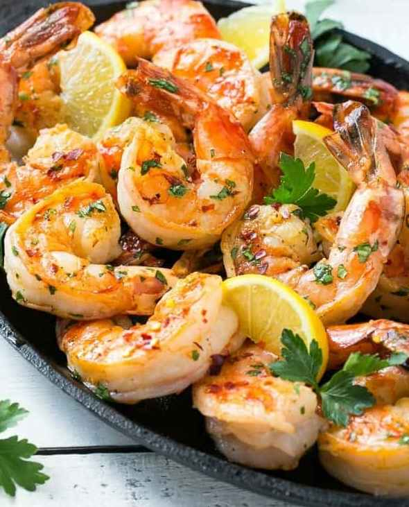

Spicy Garlic Shrimp!
Cooking Techniques
Tools to Use
Spicy garlic shrimp are simply cooked in a pan with olive oil, garlic, lemon zest and juice,
parsley and red pepper flakes.
Temperature to Watch
You can easily adjust the heat level by using more or less of
the red pepper flakes.
Spice to Use
I often reserve some of the shrimp without pepper flakes for the kids and
then spice up the adult portions.

Ingredients
- 1 tablespoon olive oil
- 1 pound large shrimp peeled and deveined
- 1 teaspoon minced garlic
- 1/4-1/2 teaspoon red pepper flakes depends on your heat preference
- 1 teaspoon lemon zest
- 1 tablespoon lemon juice
- 2 tablespoons parsley or cilantro chopped
- salt and pepper to taste
Instructions
- Heat the olive oil in a large skillet over high heat.
- Season the shrimp with salt and pepper to taste.
- Add the shrimp and cook for 3 minutes or until shrimp are pink and opaque.
- Stir in the garlic, red pepper flakes and lemon zest; cook for 1-2 minutes more.
- Add in the lemon juice and parsley then serve.
Nutrition
Calories: 147kcal | Protein: 23g | Fat: 5g | Cholesterol: 285mg
Sodium: 884mg | Potassium: 101mg | Vitamin A: 205IU | Vitamin C: 9.7mg
Calcium: 167mg | Iron: 2.5mg
Information borrowed from the following website:
https://realhousemoms.com/spicy-garlic-shrimp/
COPYRIGHT ©2020, REAL HOUSEMOMS. ALL RIGHTS RESERVED.